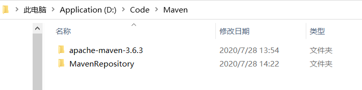
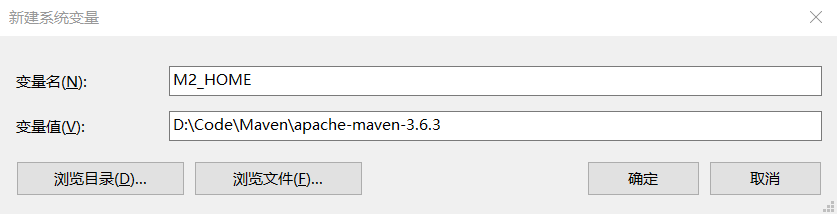
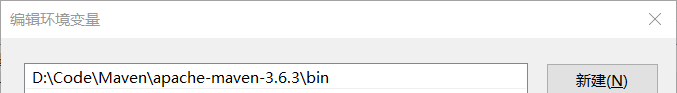
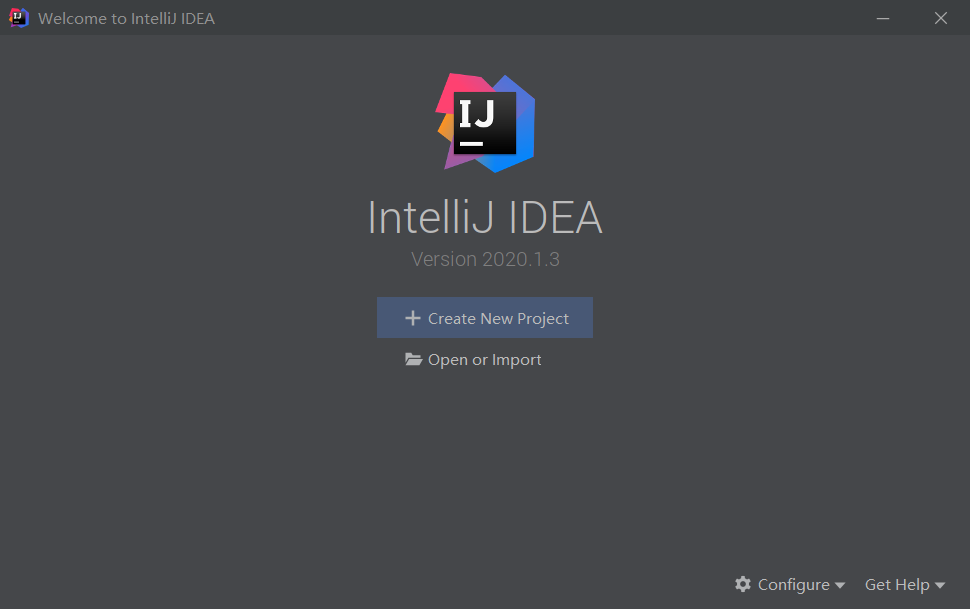
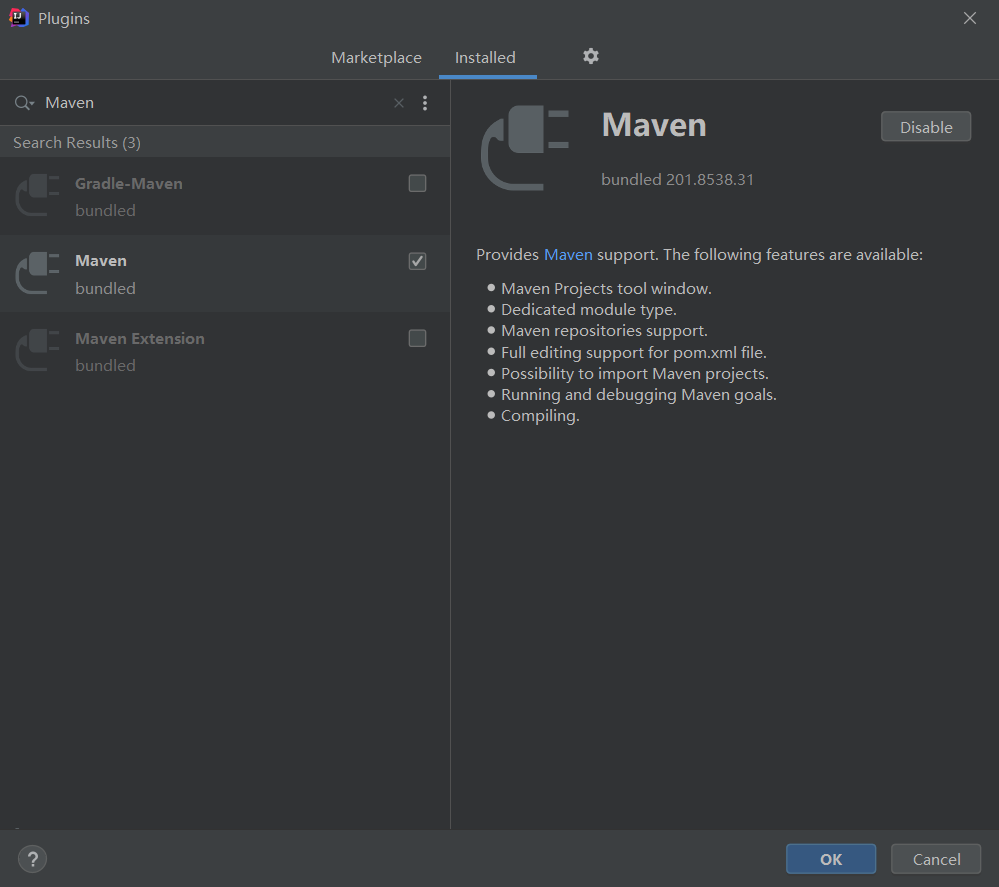
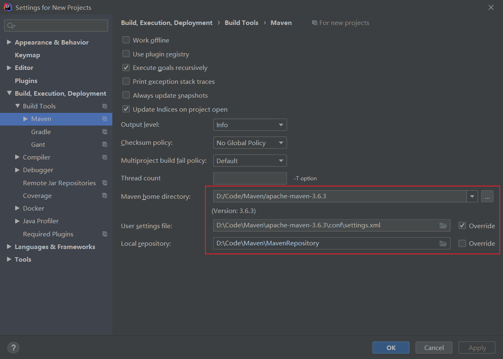
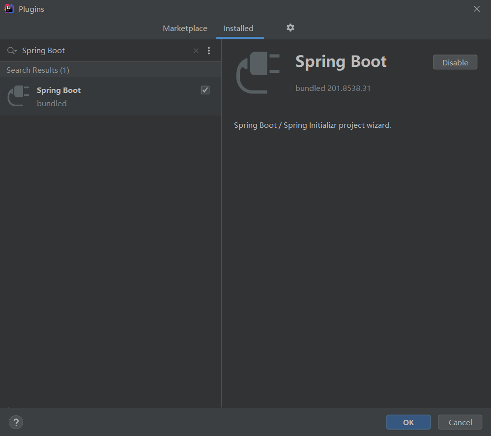
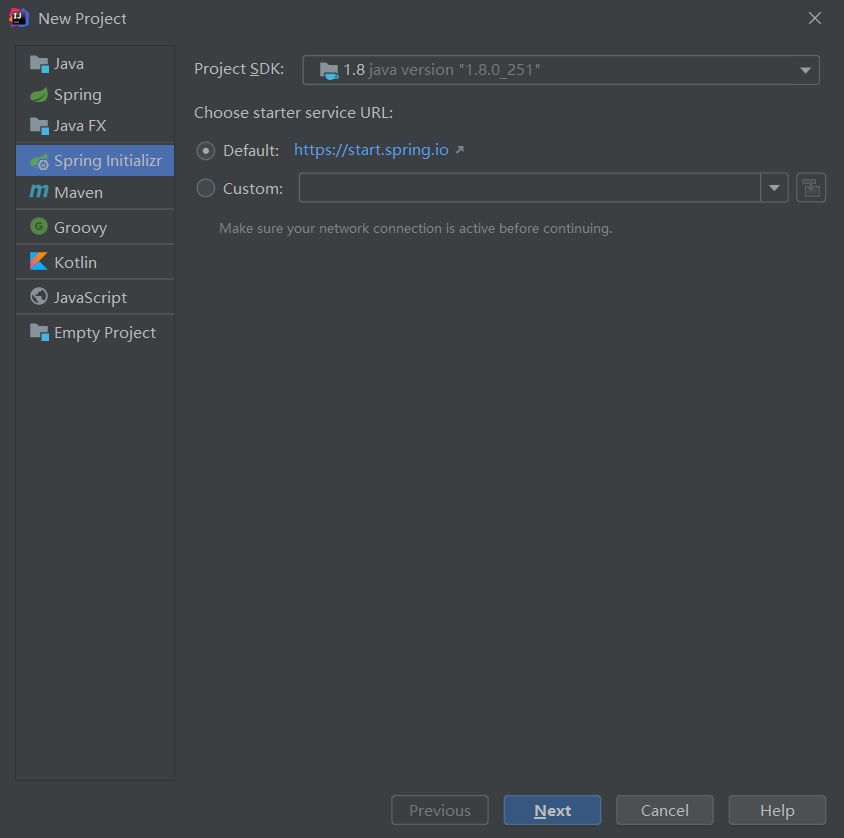
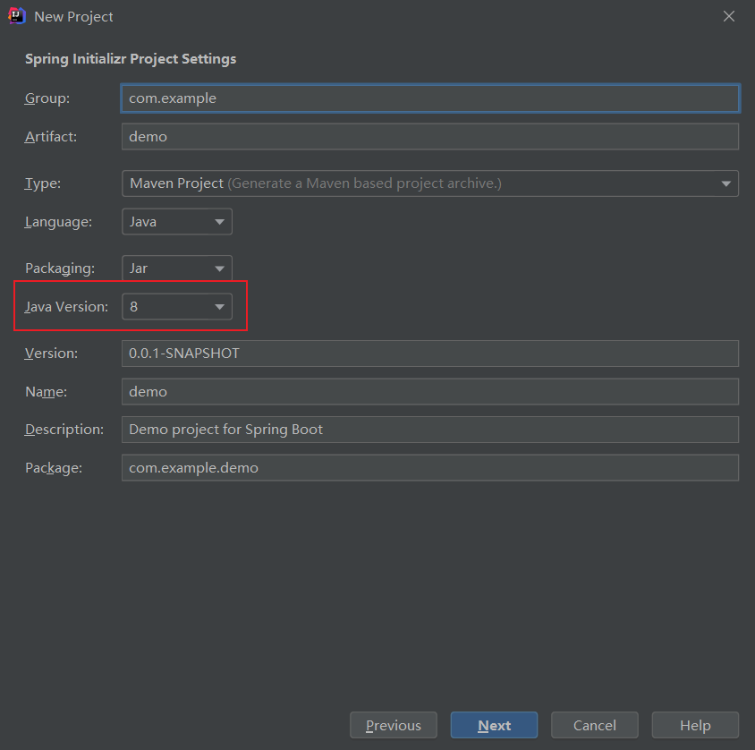
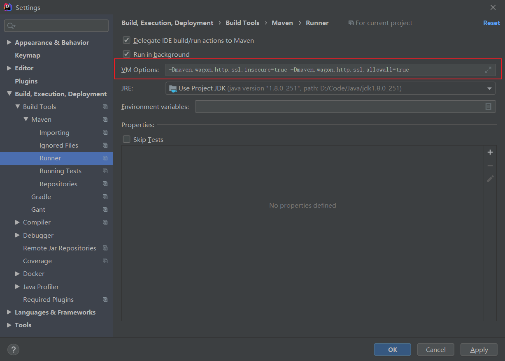

SpringBoot学习
安装Maven
下载安装
到官网下载Binary zip archive
新建一个Maven目录，将压缩包解压到该目录下。并且创建一个MavenRepository文件夹，用作本地Maven仓库

修改Maven配置
找到配置文件 Maven\apache-maven-3.6.3\conf\settings.xml
添加本地仓库路径
找到下面这段注释
1 | <!-- localRepository |
在下面加上本地Maven仓库的路径
1 | <!-- localRepository |
添加镜像
找到下面这段注释
1 | <mirrors> |
在下面加上镜像的配置
1 | <mirrors> |
配置环境变量
新建一个系统变量，变量名是M2_HOME，变量值是Maven的路径

编辑PATH系统变量，增加一个Maven目录下bin的路径

IDEA配置Maven
如果有正在打开的项目，要点击 File --> Close Project 关闭项目，进入这个页面，否则设置是只针对当前项目有效的

启动Maven插件
点击 Configure --> Plugins，搜索Maven，然后点击Enable

设置Maven插件
点击 Configure --> Settings --> Build, Execution, Deployment --> Build Tools --> Maven，修改红框内的配置
- Maven home directory：Maven路径
- User settings file：settings.xml的路径
- Local repository：本地Maven仓库路径

IDEA创建SpringBoot项目
安装SpringBoot插件
搜索 Spring Boot，Enable

创建项目
创建项目，选择 Spring Initializr

Java Version我选的是8

接下来一路Next直到Finish就好了
运行中的错误
直接运行可能会报以下错误
1 | Could not transfer artifact org.springframework.boot:spring-boot-starter-parent:pom:2.3.2.RELEASE from/to alimaven (http://maven.aliyun.com/nexus/content/groups/public/): Transfer failed for http://maven.aliyun.com/nexus/content/groups/public/org/springframework/boot/spring-boot-starter-parent/2.3.2.RELEASE/spring-boot-starter-parent-2.3.2.RELEASE.pom |
需要在 File --> Settings --> Build, Execution, Deployment --> Build Tools --> Maven --> Runner 处，给VM Options填上以下内容
1 | -Dmaven.wagon.http.ssl.insecure=true -Dmaven.wagon.http.ssl.allowall=true |
